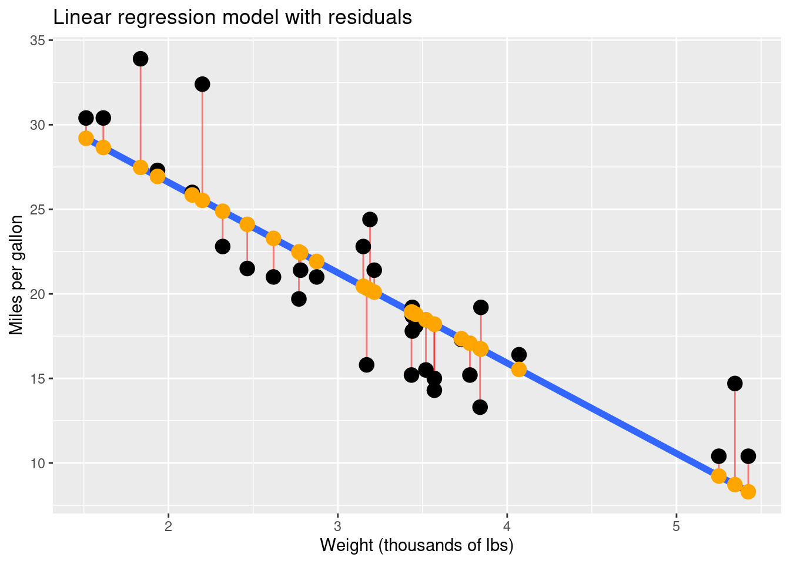
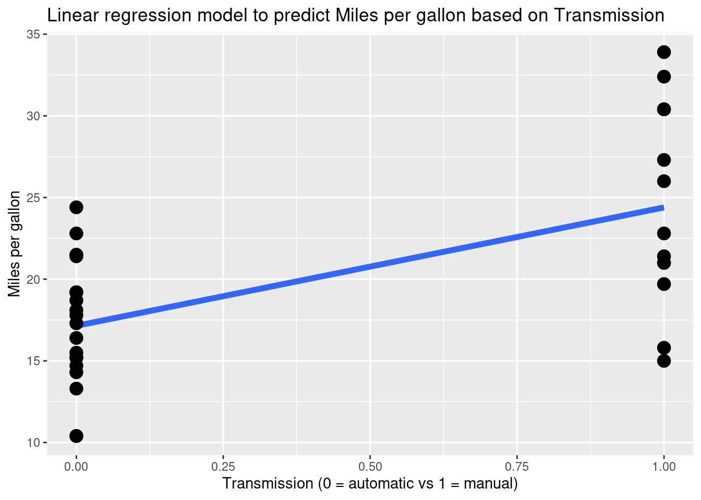

Linear Regression
Learning objectives
- Learn how to fit a linear regression model.
- Visualize regression models.
- Interpret the output of a linear regression model, including coefficients, residuals, and performance.
Start your workflow by uploading the tidyverse package as always:
We will continue exploring the mtcars dataset:
This dataset contains information about different features of some cars that we will use to predict fuel efficiency (the mpg variable).
1. Predicting a numeric response with a numeric predictor
First, let’s try to predict the mpg based on the weight of a car wt.
a. Visualizing the model
Using geom_smooth() we can visualize the linear regression model with method = lm:
# Represent the relationship with a model
mtcars |>
ggplot(aes(x = wt, y = mpg)) +
# Consider a linear regression model
geom_smooth(method = "lm", se = FALSE, size = 2) +
geom_point(size = 4) +
labs(x = "Weight (thousands of lbs)",
y = "Miles per gallon",
title = "Linear regression model to predict Miles per gallon based on Weight")
How did R choose what line to fit this data?
b. Fitting a model
If we suspect there is a linear relationship between two variables, we can consider a linear regression model. To find the expression of the linear model represented above, we use the lm(response ~ predictor, data = ...) function:
# Fit the model
fit_lin <- lm(mpg ~ wt, data = mtcars)
# Take a look at the model summary
summary(fit_lin)##
## Call:
## lm(formula = mpg ~ wt, data = mtcars)
##
## Residuals:
## Min 1Q Median 3Q Max
## -4.5432 -2.3647 -0.1252 1.4096 6.8727
##
## Coefficients:
## Estimate Std. Error t value Pr(>|t|)
## (Intercept) 37.2851 1.8776 19.858 < 2e-16 ***
## wt -5.3445 0.5591 -9.559 1.29e-10 ***
## ---
## Signif. codes: 0 '***' 0.001 '**' 0.01 '*' 0.05 '.' 0.1 ' ' 1
##
## Residual standard error: 3.046 on 30 degrees of freedom
## Multiple R-squared: 0.7528, Adjusted R-squared: 0.7446
## F-statistic: 91.38 on 1 and 30 DF, p-value: 1.294e-10This output tells us a lot of things. In particular, it gives us the estimates of the model. We predict the value of mpg if we know the weight wt of a car as follows:
\(\widehat{mpg} = 37.2851 - 5.3445 * wt\)
Note: We use the hat to specify that we get predicted values of mpg (as opposed to mpg, the observed values in the dataset).
c. Predicting values
Let’s use the expression of the model to calculate predicted values.
Try it! Use the expression of the model above to create a new variable in mtcars called predicted that predicts values of mpg based on values of wt. Then calculate the mean of the predicted values. How does the mean of predicted values compare to the mean of the observed mpg?
## [1] 20.09062The two means are very similar! That actually makes sense because of how the linear regression model is defined (but it takes some math to prove that).
Much more convenient to calculate predicted values (especially when we will have more predictors with a longer expression for the model), let’s use the predict(model_name) function:
mtcars |>
# Calculate predicted values
mutate(predicted = predict(fit_lin)) |>
# Just show the variables of interest
select(wt, mpg, predicted)We can also find predicted values for new data with the option newdata. For example, I have a Toyota RAV4 that weighs about 3,500 lbs:
# Define new data
rav4 <- data.frame(wt = 3.5)
# Find predicted values for new data
predict(fit_lin, newdata = rav4)## 1
## 18.57948The predicted fuel consumption is about 18.6 mpg… Well… my car is supposed to get a much better fuel consumption. This is an example of what we call extrapolation: we use a model that is not applicable to our new data. The cars contained in mtcars were listed in the 1974 Motor Trend US magazine and my car is from 2017 so fuel efficiency has changed a lot in between!
Try it! Predict the value of mpg for a car that weighs 3,440 lbs. Are there any cars in mtcars that had such a weight? Does their observed value of mpg match the predicted value? Why or why not?
## 1
## 18.90014# There are two cars with the same weight, different mpg
mtcars |>
filter(wt == 3.44) |>
select(wt, mpg)The predicted value of 18.9 mpg was either above or below the values of mpg for the three cars in the mtcars dataset. Our predicted values don’t usually match the observed values because there is some variation in our data.
d. Residuals
Our predicted values don’t usually match exactly our observed values. The residuals represent the difference between observed values and predicted values:
mtcars |>
# First add predicted values based on model
mutate(predicted = predict(fit_lin)) |>
# Calculate residuals = observed - predicted
mutate(residuals = mpg - predicted) |>
# Only display variables of interest
select(wt, mpg, predicted, residuals)Or more conveniently using the resid(model_name) function:
Let’s visualize the residuals:
mtcars |>
# Calculate predicted values
mutate(predicted = predict(fit_lin)) |>
# Use a ggplot to represent the relationship
ggplot(aes(x = wt, y = mpg)) +
# Add the linear model
geom_smooth(method = "lm", se = FALSE, size = 2) +
# Add residuals = vertical segments from observations to predicted
geom_segment(aes(xend = wt, yend = predicted), alpha = .5, color = "red") +
# Display the observed data
geom_point(size = 4) +
# Display the predicted (on top of the line)
geom_point(aes(y = predicted), size = 4, color = "orange") +
labs(x = "Weight (thousands of lbs)",
y = "Miles per gallon",
title = "Linear regression model with residuals")
A linear regression model is actually built by minimizing the sum of squared residuals.
Try it! Find the mean of the residuals. Why does it make sense to get this value?
mtcars |>
# Calculate residuals
mutate(residuals = resid(fit_lin)) |>
# Find the mean
summarize(mean(residuals))We should find 0 (not exactly 0 because of rounding). It makes sense because all of the data points balance each other.
e. Performance
To quantify performance for linear regression models, we can consider the average distance between the predicted values from the model and the observed values in the dataset. This is called the root mean square error (RMSE) of the model.
# Calculate RMSE of regression model: square root of mean residuals squared
sqrt(mean(resid(fit_lin)^2))## [1] 2.949163The lower the RMSE, the better a model fits a dataset and the more reliable our predicted values can be. Note that the RMSE is reported in the same unit as the outcome variable. Here it means that the predicted values typically differ from the actual values of mpg by 2.95 mpg.
We can also consider the adjusted coefficient of determination \(R^2\), which reports the percentage of variation in the response variable that can be explained by the predictor variables.
## [1] 0.7445939The higher the \(R^2\), the better a model fits a dataset. Note that \(R^2\) represents a proportion between 0 and 1. Here it means that about 74.5% of the variation in mgp can be explained by the weight of a car.
Try it! Predict mpg based on another numeric feature of the car (for example, disp, hp, …). Is the model with this new predictor performing better or worse than the model based on mpg?
# Fit the model with disp
fit_lin <- lm(mpg ~ disp, data = mtcars)
# Performance based on RMSE
sqrt(mean(resid(fit_lin)^2))## [1] 3.148207## [1] 0.7089548The model with disp is not performing better (higher RMSE and lower adjusted R-squared).
2. Using a categorical predictor
What if we chose to predict the fuel consumption based on the transmission of a car (the am variable, 0 = automatic vs 1 = manual)? Let’s take a look at the relationship with this new predictor:
# Represent the relationship
mtcars |>
ggplot(aes(x = am, y = mpg)) +
# Consider a linear regression model
geom_smooth(method = "lm", se = FALSE, size = 2) +
geom_point(size = 4) +
labs(x = "Transmission (0 = automatic vs 1 = manual)",
y = "Miles per gallon",
title = "Linear regression model to predict Miles per gallon based on Transmission")
It doesn’t really look like a linear relationship but we can still fit a linear regression model with the am predictor:
# Fit the model
fit_lin <- lm(mpg ~ am, data = mtcars)
# Take a look at the model summary
summary(fit_lin)##
## Call:
## lm(formula = mpg ~ am, data = mtcars)
##
## Residuals:
## Min 1Q Median 3Q Max
## -9.3923 -3.0923 -0.2974 3.2439 9.5077
##
## Coefficients:
## Estimate Std. Error t value Pr(>|t|)
## (Intercept) 17.147 1.125 15.247 1.13e-15 ***
## am 7.245 1.764 4.106 0.000285 ***
## ---
## Signif. codes: 0 '***' 0.001 '**' 0.01 '*' 0.05 '.' 0.1 ' ' 1
##
## Residual standard error: 4.902 on 30 degrees of freedom
## Multiple R-squared: 0.3598, Adjusted R-squared: 0.3385
## F-statistic: 16.86 on 1 and 30 DF, p-value: 0.000285Try it! Write the expression of the new model. Predict values of mpg based on am using predict(). Why does it make sense to get what we get? And what are we getting exactly?
# Look at the predicted values
mtcars |>
mutate(predicted = predict(fit_lin)) |>
select(am, mpg, predicted)
# Mean mpg per type of transmission
mtcars |>
group_by(am) |>
summarize(mean_mpg = mean(mpg))The expression of the model is \(\widehat{mpg}=17.147+7.245∗am\)
We get only two possible predicted values which correspond to the mean value of mpg for each type of transmission.
3. Using multiple predictors
We can add many predictors to our linear regression model! What if we combine wt and am?
# Fit the model
fit_lin <- lm(mpg ~ wt + am, data = mtcars)
# Take a look at the model summary
summary(fit_lin)##
## Call:
## lm(formula = mpg ~ wt + am, data = mtcars)
##
## Residuals:
## Min 1Q Median 3Q Max
## -4.5295 -2.3619 -0.1317 1.4025 6.8782
##
## Coefficients:
## Estimate Std. Error t value Pr(>|t|)
## (Intercept) 37.32155 3.05464 12.218 5.84e-13 ***
## wt -5.35281 0.78824 -6.791 1.87e-07 ***
## am -0.02362 1.54565 -0.015 0.988
## ---
## Signif. codes: 0 '***' 0.001 '**' 0.01 '*' 0.05 '.' 0.1 ' ' 1
##
## Residual standard error: 3.098 on 29 degrees of freedom
## Multiple R-squared: 0.7528, Adjusted R-squared: 0.7358
## F-statistic: 44.17 on 2 and 29 DF, p-value: 1.579e-09Try it! Predict the value of mpg for an automatic Alfa Romeo Alfetta GTV 2.0 which weighs about 2500 lbs.
# Find predicted values for new data
alfa <- data.frame(wt = 2.5, am = 0)
predict(fit_lin, newdata = alfa)## 1
## 23.93952The predicted value of mpg is about 24 mpg for this car.
And what if we add all possible predictors?
# Fit the model using all predictors: refer to all variable with `.` (always double check it makes sense to add all predictors)
fit_lin <- lm(mpg ~ ., data = mtcars)
# Take a look at the model summary
summary(fit_lin)##
## Call:
## lm(formula = mpg ~ ., data = mtcars)
##
## Residuals:
## Min 1Q Median 3Q Max
## -3.4506 -1.6044 -0.1196 1.2193 4.6271
##
## Coefficients:
## Estimate Std. Error t value Pr(>|t|)
## (Intercept) 12.30337 18.71788 0.657 0.5181
## cyl -0.11144 1.04502 -0.107 0.9161
## disp 0.01334 0.01786 0.747 0.4635
## hp -0.02148 0.02177 -0.987 0.3350
## drat 0.78711 1.63537 0.481 0.6353
## wt -3.71530 1.89441 -1.961 0.0633 .
## qsec 0.82104 0.73084 1.123 0.2739
## vs 0.31776 2.10451 0.151 0.8814
## am 2.52023 2.05665 1.225 0.2340
## gear 0.65541 1.49326 0.439 0.6652
## [ reached getOption("max.print") -- omitted 1 row ]
## ---
## Signif. codes: 0 '***' 0.001 '**' 0.01 '*' 0.05 '.' 0.1 ' ' 1
##
## Residual standard error: 2.65 on 21 degrees of freedom
## Multiple R-squared: 0.869, Adjusted R-squared: 0.8066
## F-statistic: 13.93 on 10 and 21 DF, p-value: 3.793e-07Now the expression of the model becomes very complex but check out the performance based on adjusted R-squared!
Notes:
Adding too many variables can create issues such as overfitting: the model is too specific to the cars in the dataset on which we “train” the model and it will be very difficult to generalize to other cars.
We can quickly check which features might be more useful for making predicted by looking at the last column in the model output. Any
.or*shows which features are “significant” while taking into account all other variables.
Recommended Resources
- Worksheet keys are posted at the end of the week on Canvas under Programming Tools.
- Recommended readings: Linear regression
- More details on lm()